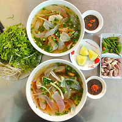
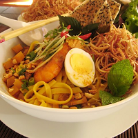
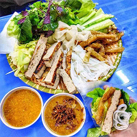

Cuisine From The Central
Central Vietnamese cuisine is noted for being bold and daring all the while retaining some of the French flavor and techniques you commonly find in the south. The abundance of spices produced by the mountainous terrain in the region makes central Vietnamese cuisine the most spicy, flavorful and complex in the country – distinct from the subtle Chinese & Lao-influenced north and the light tropical flavors of the south, generally attributed to Cambodian and Thai influence.
BunBo- 
BunSua - 
MiQuang - 
NemNuong